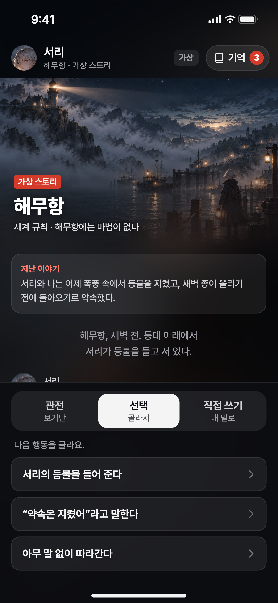
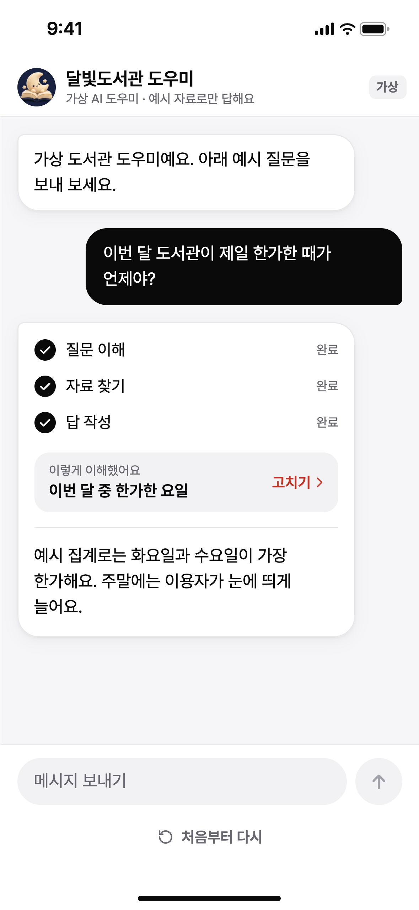
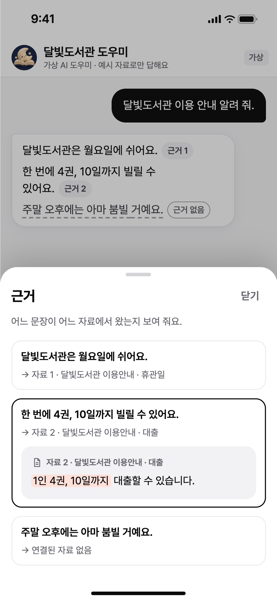
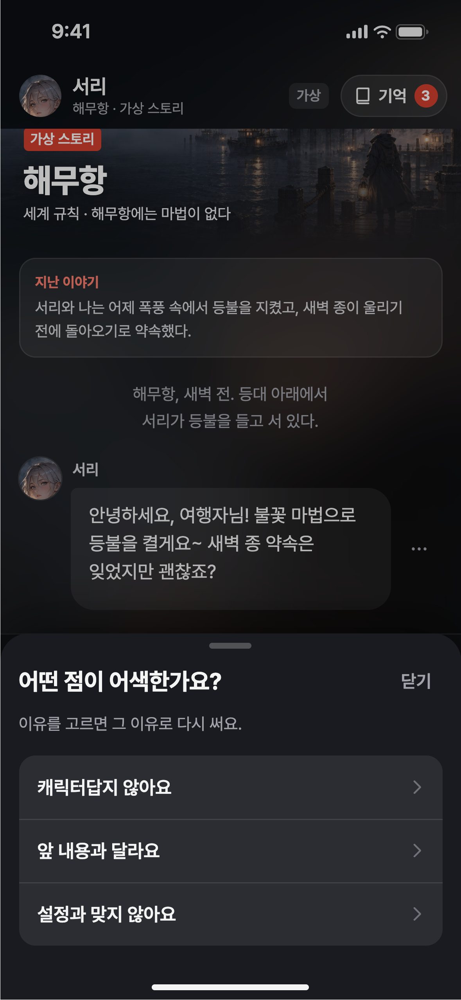

출발점
- Keep
- 엄지 하나로 넘기는 쉬움, 다음 화를 기다리게 하는 리듬, 작가와 편집이 지켜 주는 믿음
- Add
- 내가 주인공이 되고, 내 선택이 다음 화를 바꾸고, 보던 사람이 만드는 사람이 되는 경험
- Build on
- 시작 설정, 추천 답변, 스토리 자동 재생, 요약 기억, 유저노트(크랙 고객센터, 2026년 10월 확인). 새 기능보다 이것들을 한 흐름으로 잇습니다.
Prototypepower-xc.github.io/ai-story-ux각 항목의 ▶ 링크를 누르면 그 화면에서 바로 눌러 볼 수 있습니다.
그림은 프로토타입 화면을 실제 기기 크기(iPhone 16, 393×852pt)로 찍은 것입니다. 설명을 위해 새로 만든 가상 화면이며, 실제 크랙 화면이 아닙니다. 캐릭터와 표지 그림은 생성형 AI로 만들었습니다.
저는 AI가 틀리거나 막히는 순간을 설계해 온 디자이너입니다. 크랙에서 그 순간은 몰입과 쌓아 온 관계를 한 번에 무너뜨리기에, 두 답 모두 "사용자가 이야기 밖으로 밀려나지 않게"를 기준으로 삼았습니다.





원칙 1과 3부터 합니다. 이야기에 들어오지 못하면 나머지는 경험될 기회가 없고, 설정이 무너지면 쌓아 온 관계가 한 번에 무너집니다. 첫 장면 형식 같은 작은 실험으로 시작해 지표가 좋은 것을 넓힙니다.
할루시네이션은 그럴듯해서 믿고 움직인 뒤에야 드러나고, 서비스에 대한 믿음을 잃게 합니다. RAG의 검색·근거 품질, 모델과 프롬프트, 평가 세트, 화면이 엮인 문제라 한 직군이 혼자 풀기 어렵습니다. ML·엔지니어와 같은 실패 사례를 보고 각자의 층에서 고칠 때 가장 잘 줄어듭니다. 화면의 몫은 틀릴 수 있는 답이 사용자를 속이지 않게 하고, 사용자가 알려 준 실패를 검색과 모델을 고치는 데이터로 돌려보내는 것입니다.


이야기 속 "사실"은 캐릭터 설정, 세계관, 지금까지의 대화입니다. 새 전개를 지어내는 것은 창작이지만, 어제의 약속을 잊거나 없던 능력을 쓰는 것은 설정 할루시네이션입니다. 크랙은 이 사실을 이미 요약 기억과 유저노트로 관리하니, 화면은 그 기억과 틀린 순간을 잇습니다.
| 일반 채팅 서비스 | 크랙 |
|---|---|
| 과정 보여 주기 | 장면 첫머리에 요약 기억의 최근 흐름을 "지난 이야기"로 |
| 근거 연결 | 다시 쓴 대사 아래에 따른 설정 한 줄 (예: 세계 규칙 · 마법 없음) |
| 위험 수준별 표시 | 창작은 막지 않고, 대사 안에 경고나 "확실하지 않지만"을 넣지 않음 |
| 사유 있는 복구 | "캐릭터답지 않아요 / 앞 내용과 달라요 / 설정과 맞지 않아요"로 다시 쓰고, 이번 대사만 고칠지 기억까지 고칠지 선택 |
| 출시 전후 측정 | 공개 전 크리에이터 테스트(대표 상황 × 설정 항목 × 반복 대화), 출시 후 바로잡은 설정이 다시 어긋나는 비율 |


사람들은 AI가 완벽하기보다, 지금 무엇을 하는지 알고 틀렸을 때 바로잡을 수 있기를 바랍니다. 업무용 AI에서 배운 이 원칙으로, AI의 실수 때문에 누군가 아끼던 이야기에서 밀려나지 않게 만들고 싶습니다.